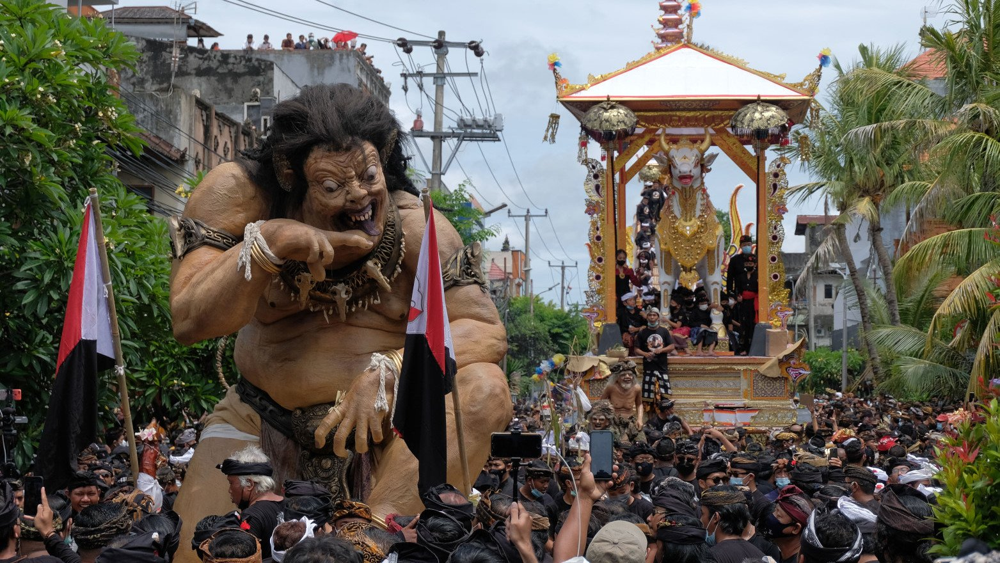
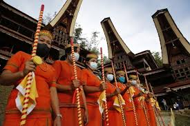
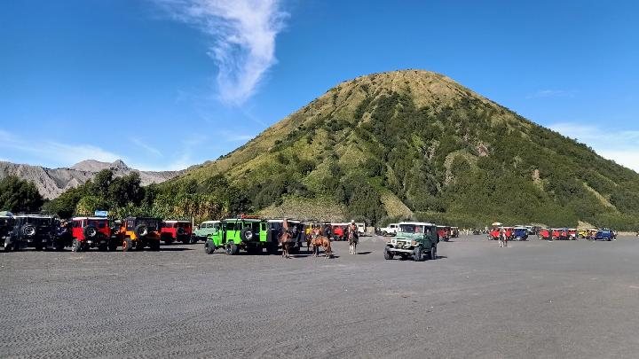
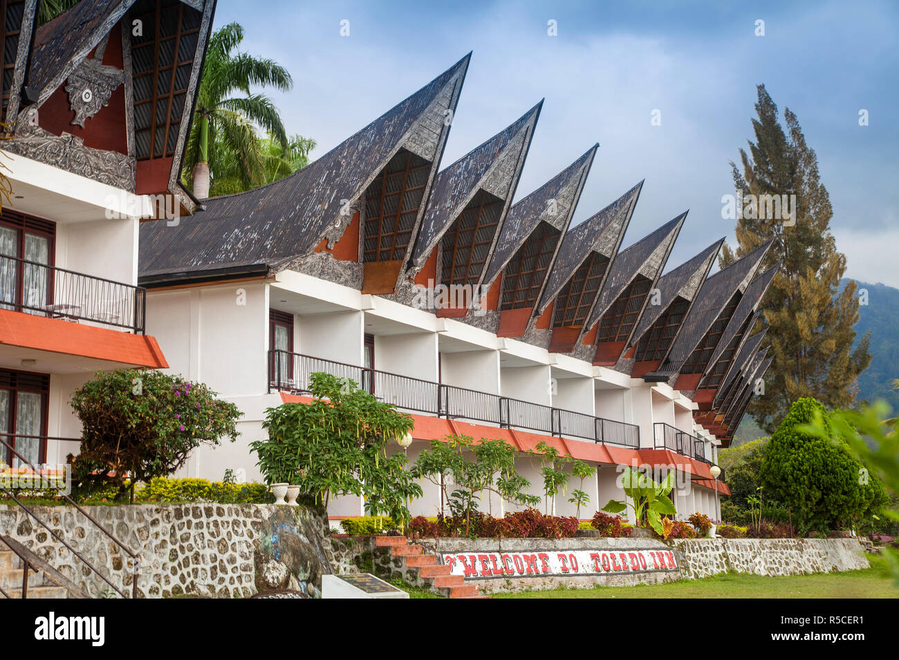

Kebudayaan Indonesia
Tari Saman, Aceh
Tari Saman adalah tarian tradisional dari Aceh yang dilakukan oleh banyak penari dengan gerakan yang serempak dan dinamis.

Upacara Ngaben, Bali
Ngaben adalah upacara pembakaran jenazah di Bali yang dianggap sebagai proses penyucian roh menuju alam baka.
Tradisi Toraja, Sulawesi Selatan
Tradisi Toraja dikenal dengan rumah adat Tongkonan dan upacara pemakaman yang megah dan penuh ritual.
Tempat Wisata Terbaik di Indonesia
Raja Ampat, Papua
Raja Ampat terkenal dengan keindahan bawah lautnya yang memukau dan menjadi surga bagi penyelam.

Bromo, Jawa Timur
Gunung Bromo menawarkan pemandangan matahari terbit yang menakjubkan dan lautan pasir yang luas.
Danau Toba, Sumatera Utara
Danau Toba merupakan danau vulkanik terbesar di dunia dengan pemandangan alam yang spektakuler.

Daftar Hotel Favorit
Hotel Raja Ampat Dive Lodge
Fasilitas: Kolam renang, Restoran, Wi-Fi
Harga: Rp 2,000,000/malam
Alamat: Raja Ampat, Papua

Bromo Terrace Hotel
Fasilitas: Parkir, Restoran, Wi-Fi
Harga: Rp 1,500,000/malam
Alamat: Bromo, Jawa Timur

Toledo Inn
Fasilitas: Kolam renang, Restoran, Wi-Fi
Harga: Rp 1,200,000/malam
Alamat: Danau Toba, Sumatera Utara
